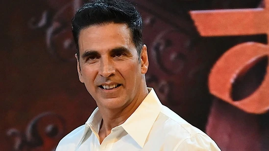
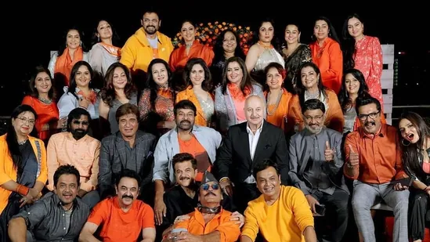
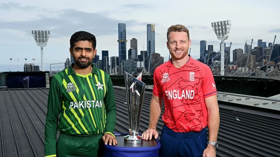
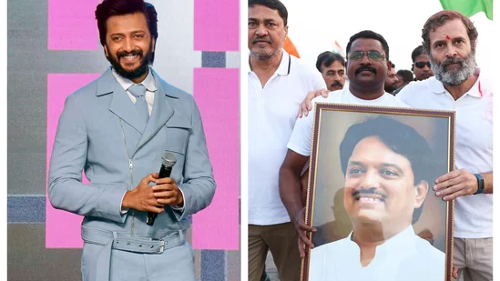
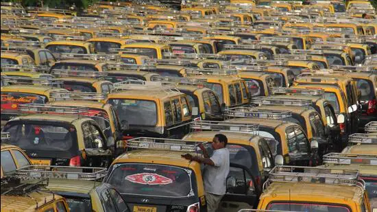
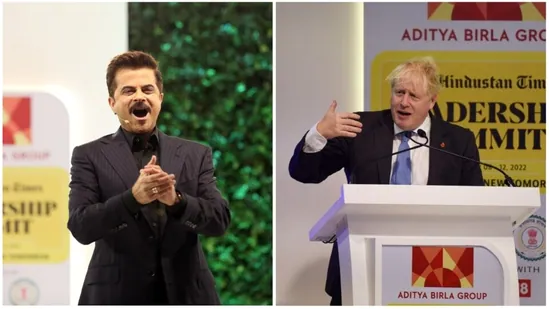
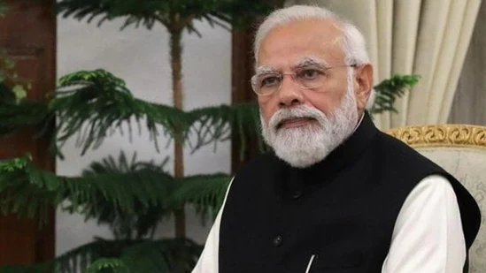
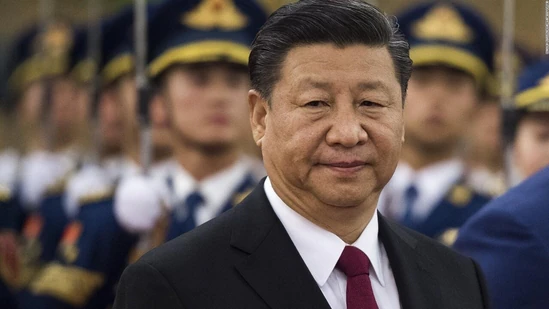

Akshay Kumar addressed what Bollywood can do to bring back audiences to the theatres and spoke about reducing the cost of movie outing, including actors' fees and production costs.
By HT Entertainment Desk Akshay Kumar has become one of the first Bollywood stars to address the high cost of movie outings in India currently. Speaking recently at the Hindustan Times Leadrship Summit, the actor admitted that the film industry needs to ‘dismantle’ the existing system and ‘start all over again’ if it wants to win the audience back. He emphasised on the need to lower the cost of movie outings and said he would want to lower his fees for that as well. Also read: Akshay Kumar says his films are not working because of Kapil Sharma
Meenakshi Sheshadri, Chiranjeevi, Madhoo, Venkatesh, Ramya Krishnan and many other celebs got together for the annual 80s stars reunion, which was held in Mumbai this year. It was hosted by Poonam Dhillon and Jackie Shroff at the latter’s home in Mumbai. See all the photos.
Chiranjeevi, Venkatesh, Khushboo, Shobana, Revathy, Meenakshi Sheshadri, Tina Ambani and Madhoo attended a bash at Jackie Shroff’s Mumbai house recently. They were also joined by Anupam Kher, Vidya Balan, Raj Babbar and Anil Kapoor, among others. The party was hosted by Jackie and Poonam Dhillon, and marked the annual '80s actors' reunion. Also read: Inside Chiranjeevi's 67th birthday with wife, Ram Charan and Upasana
The ICC is keeping the option of a reserve day open but has tried to make sure that the T20 World Cup 2022 final gets over on Sunday itself.
Bollywood actor Riteish Deshmukh shared a photo of Bharat Jodo Yatra where a yatri held high a photo of his father, former Maharashtra chief minister Vilasrao Deshmukh.
Bollywood actor Riteish Deshmukh, son of former Maharashtra chief minister Vilasrao Deshmukh, shared a photo from Rahul Gandhi's Bharat Jodo Yatra where a towering photo of his father was held by a follower high above the crowd of yatris. Actor and Riteish's wife Genelia too shared the photo. Several social media users asked Riteish why he has not joined the yatra.
From March 31, 2023, if you hail a kaali peeli its roof light can tell you if it is vacant, hired, or the driver wants to take a break. The Mumbai Metropolitan Region Transport Authority (MMRTA) has made it mandatory for all taxis in the city to install the colour-coded indicator before the deadline
Mumbai, India - 2 Sept. 2015 : The black and yellow taxi observes strike against uber and ola cabs, The strike continues for the second day. All the taxi drivers line up at CST international airport, Andheri, in Mumbai, India, on Wednesday, September 2, 2015. (Photo by Pramod Thakur/ Hindustan Times) (Hindustan Times)
Mumbai: From March 31, 2023, if you hail a kaali peeli its roof light can tell you if it is vacant, hired, or the driver wants to take a break. The Mumbai Metropolitan Region Transport Authority (MMRTA) has made it mandatory for all taxis in the city to install the colour-coded indicator before the deadline.
Former UK prime minister Boris Johnson, actor-filmmaker George Clooney, and Sachin Tendulkar, among other big names, talk about politics, India's economy, sports, entertainment etc.,
The final day of the five-day-long Hindustan Times Leadership Summit 2020 is being held today, November 12. The agenda of this year's summit is ‘Envisioning a New Tomorrow. All the sessions of Day 5 are being held at the Taj Palace, New Delhi.(HT Photo/Sanchit Khanna)
G20 Summit: US President Joe Biden and British Prime Minister Rishi Sunak will be among world leaders attending the summit.
Prime Minister Narendra Modi is set to attend the G20 Summit in Indonesia’s Bali. This comes just weeks before India assumes the G20 presidency from December 1. The bloc is said to represent more than 80 per cent of the world’s GDP and over 75 per cent of the global trade. Apart from taking over the presidency, PM Modi is also expected to be holding meetings with world leaders on the sidelines of the summit. “During the Bali Summit, I will have extensive discussions with other G20 Leaders on key issues of global concern, such as reviving global growth, food and energy security, environment, health, and digital transformation. On the sidelines of the G20 Summit, I will meet with Leaders of several other participating countries, and review the progress in India’s bilateral relations with them,” the Prime Minister said in his departure statement.
1) “In a significant moment for our country and citizens, President of Indonesia Joko Widodo will hand over the G20 Presidency to India at the closing ceremony of the Bali Summit. India will officially assume the G20 Presidency from December 1,” PM Modi said on Monday. “I will also extend my personal invitation to G20 Members and other invitees to our G20 Summit next year," he added.
While the dates of the 17th India-China senior military commanders meeting is still be to be finalized, there is positive outcome expectation on resolution of remaining two military friction points as political pressure after conclusion of the 20th Party Congress of Communist Party of China (CPC) may have eased as President Xi has got the third term.
External Affairs Minister S Jaishankar at the HT Leadership Summit last Thursday made it amply clear that Beijing had to commit to past border agreements and refrain from unilateral military action along the 3488 km long LAC to restore normalcy in otherwise soured bilateral relations.